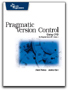

Associated Sites

CM Crossroads
is the online community for Configuration Management (not just
software CM. We write a
regular column on Agile SCM for the Configuration Management Journal. You might also be interested in the Agile Journal

We are technical advisors for the
Configuration Management Zone on StickyMinds.com.
SCM and Release Management Resources
- Steve Easterbrook's Resource Guide
- Brad Appleton's Page has many links to SCM resources.
- Damon Poole's Blog is about SCM in an agile environment.
- The scm-patterns list on Yahoo Groups is a place to discuss the patterns in the book, as well as other patterns. There is also a resources section.
- A Software Release Management wiki maintained by Wim Kerkhoff.
- StickyMinds.com has a Configuration Management Zone. (Brad and Steve are Technical Advisors for the CM Zone.)
- CM Crossroads is an online community and resource center for Configuration Management hosting interactive forums, a member contributed file cabinet and a substantial resource links database.
- Configuration Management wiki at CM Crossroads is a place to share information about the all aspects of configuration management, not just SCM or SCM patterns.
- UCM Central, an Australian based, non-commercial site dedicated to Configuration Management education.
- is a product company that specializes in smart software build tools.
Books
- Dave Thomas and Andy Hunt have
written an excellent book,
Pragmatic Version Control which explains how to use CVS in a basic and effective way. This book is an excellent companion to the SCM Patterns Book.
- See the list on our Related Books page for relevant books available through Amazon.com.
Other Places of Interest
- The Agile Alliance.
- The c2.com wiki which contains information about patterns, XP and other items of relevance if you are interested in agile development.
- The Extreme Programming Group at Yahoo Groups often discusses topic of interest to those who want to develop code quickly and effectively.
- XProgramming.com is a great Extreme Programming resource. This site includes & XPMagazine.
- Methods & Tools is an online newsletter with informations on many aspects of application development.
- Good testing practice is a basis for good SCM processes. Testing.com is an excellent resource for learning about testing, including agile testing.
- Martinig & Associates has a good collection of links related to software development.
- Software Development Magazine has regular articles on agile development and process.
Services and Tools
- The Consulting Page has links to tools and other resources that you can use if you need assistance with your project.